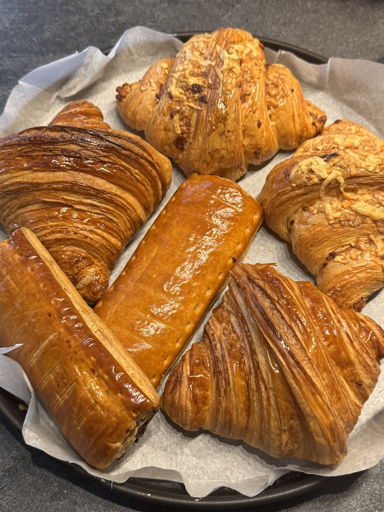
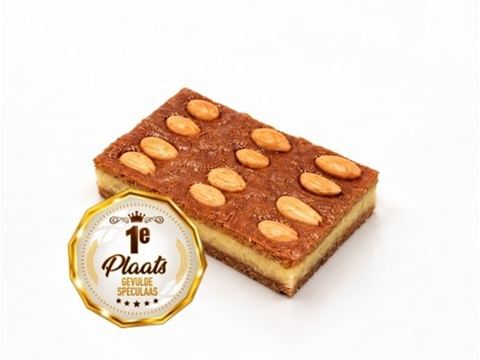
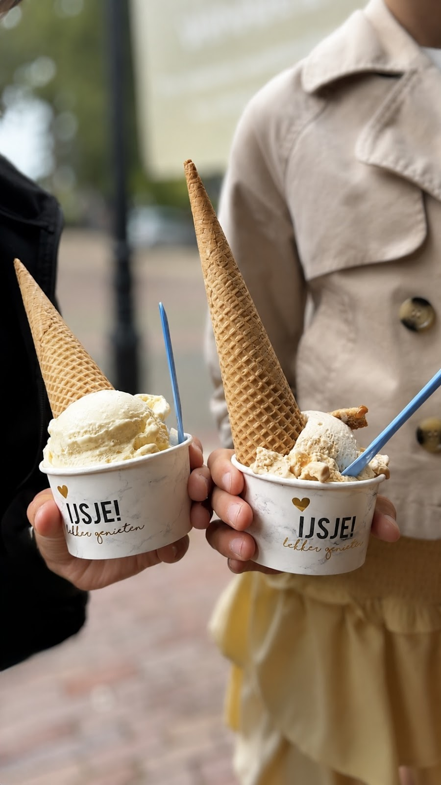
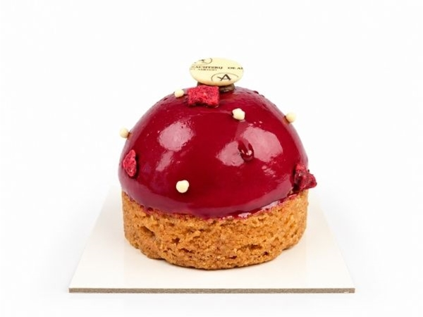
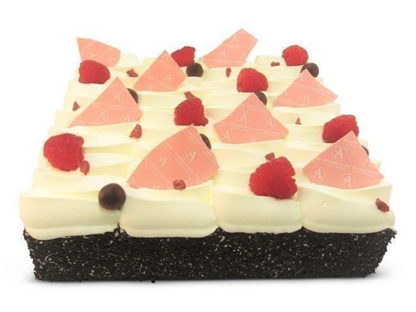
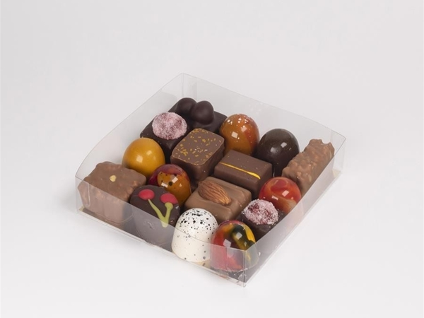
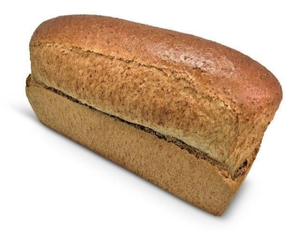
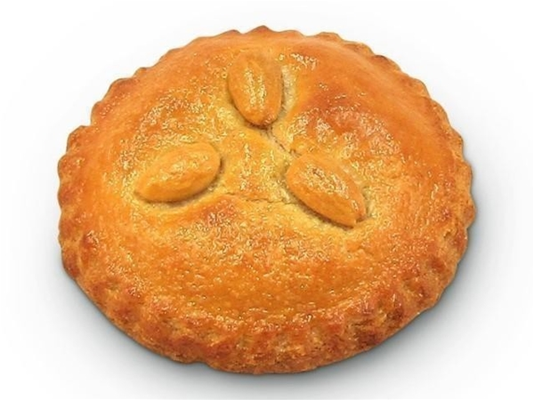
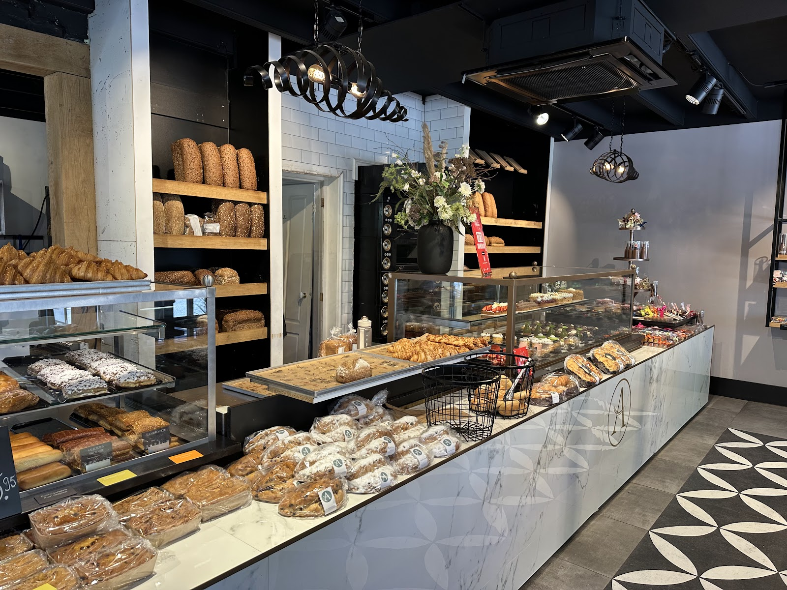
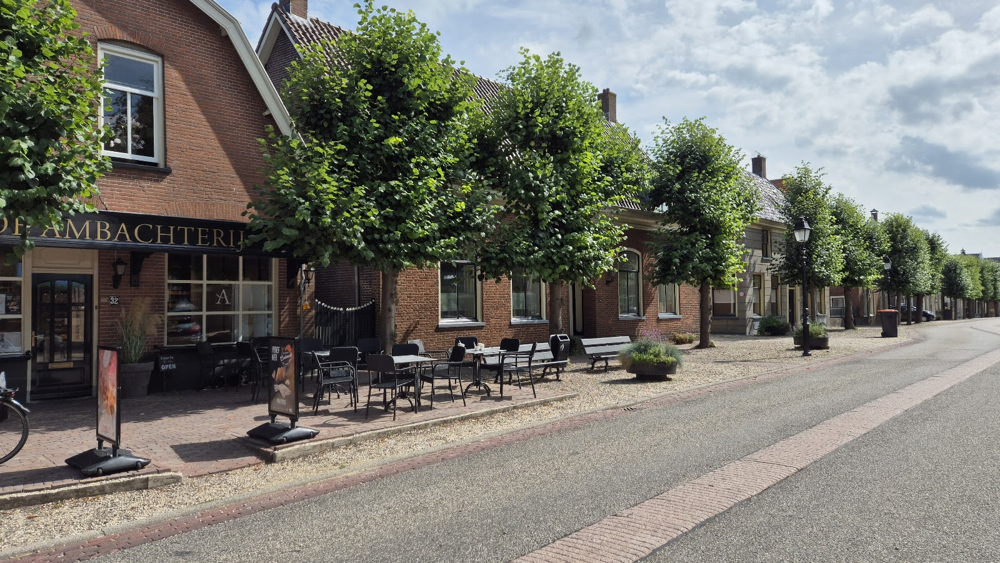

Warme bakker in Schoonrewoerd
Een warme bakker, zoals het hoort.
Brood, gebak, taarten, chocolade en ijs, ambachtelijk gemaakt. Kom langs aan de Dorpsstraat of bestel vandaag online voor morgen.
4,7 uit 168 Google-reviews

Hier rijden mensen voor om.
Twee producten waar Schoonrewoerd trots op mag zijn. De gevulde speculaas viel in de prijzen, en ons ijs laat voorbijgangers keren.


“Bij het voorbij rijden het bord ‘beste ijs 2026’ gezien, we zijn omgekeerd. Die prijs hebben meer dan verdiend! Heerlijk en zeer betaalbaar.”
Lindy en Paul Homan, via Google
Wat er in de vitrine ligt
Van gewoon brood tot echte patisserie. Alles ambachtelijk, ook voor wie op dieet is of een allergie heeft.





Verder: broodjes, ontbijt, cake & koekjes, dieet & allergie en in het seizoen alles voor Sinterklaas.
Specialiteiten
- Gevulde speculaas€ 8,50
- Speculaasjes roomboter€ 6,30
- Tulpje€ 4,15
- Appeltaart€ 11,70
- Croissants (aanbieding op vrijdag & zaterdag)€ 1,90
- Saucijzenbroodje€ 3,00
Aanbiedingen
- 4 + 1 gratisHarde broodjes: bij vijf is de goedkoopste gratis.
- 2e halve prijsBolletjes: bij twee krijgt u op de goedkoopste 50% korting.
- 3 + 1 gratisSnacks: bij vier is de goedkoopste gratis.
Vandaag besteld, morgen vers.
Bestel in onze webshop uiterlijk om 23:59 uur, dan heeft u het de volgende dag. Op zondag is de webshop gesloten. Met de postcodecheck ziet u direct of we bij u bezorgen.
Wat klanten zeggen
4,7 ★★★★★ uit 168 reviews op Google
“Dit is nou echt een warme bakker, heerlijke produkten! Het gebak is echt patisserie, ze maken alles ambachtelijk en het personeel is vriendelijk en aardig.”
“Per toeval deze bakkerij ontdekt! Heerlijke broodjes, croissant (wat een verschil met andere bakkers) en gewoon brood meegenomen. Ga hier zeker nog eens voor omrijden.”
“Mooie winkel met fijn personeel, het gebak en de ijsjes zijn altijd heerlijk.”
“Hele smakelijke producten en enorm aanbod in gebak, brood en koeken. De prijzen zijn stevig maar de prijswinnende producten zijn absoluut het proberen waard.”

Loop gerust binnen.
Achter de gevel aan de Dorpsstraat vindt u een winkel vol brood op eiken planken, een marmeren toonbank en vitrines met gebak. Buiten onder de bomen staan tafeltjes.

Kom langs
Winkel Schoonrewoerd
Dorpsstraat 32, 4145 KC Schoonrewoerd
- Maandag t/m vrijdag
- 08:30 tot 17:30
- Zaterdag
- 08:00 tot 15:00
- Zondag
- Gesloten